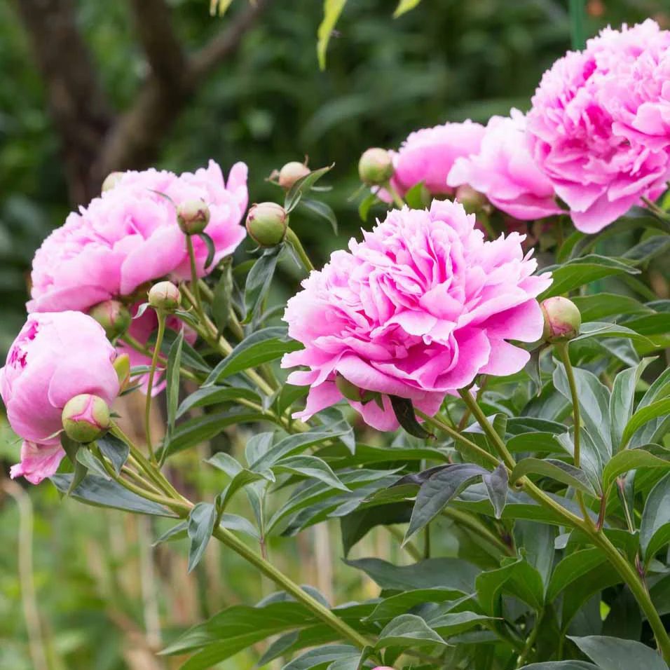

La Pivoine
La délicatesse incarnée
L'histoire de la Pivoine
La pivoine, symbole de prospérité et de beauté en Asie, est cultivée depuis des millénaires pour ses fleurs somptueuses et son parfum envoûtant.
Origine
Asie
Floraison
Avril à Juin
Symbolique
Prospérité, Beauté
Caractéristiques
Parfum
Doux et subtil, variant selon les variétés
Couleurs
Blanc, rose, rouge, jaune et leurs nuances
Entretien
Sol riche, exposition ensoleillée, arrosage modéré